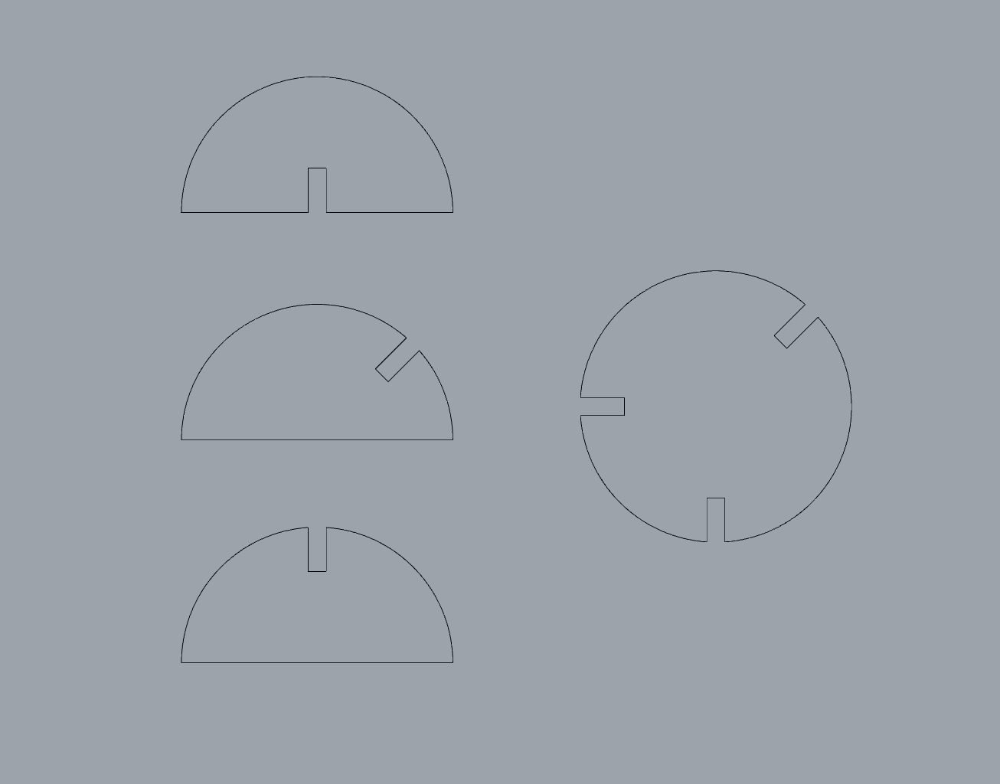
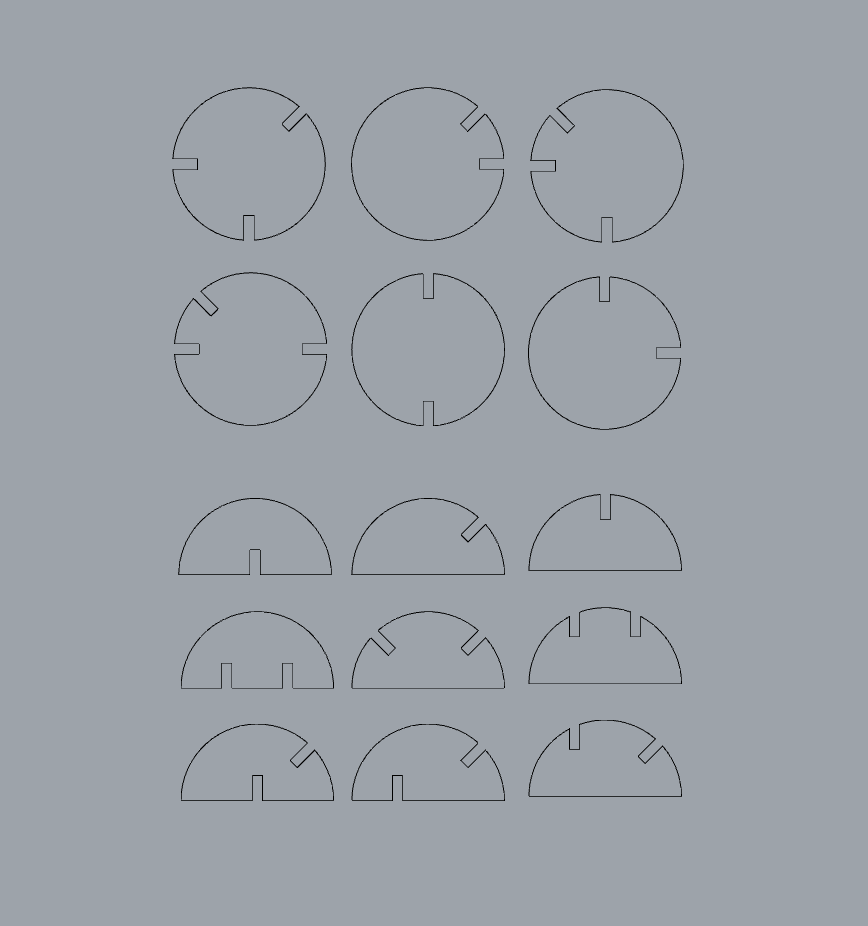

Week 2: 2D Design + Cutting
Task: Create a press-fit construction kit that can be assembled in multiple ways, and accounts for laser cutter kerf.
Skills used: Rhino 2D Drawing, Laser Cutting
For this assignment I was interested in experimenting with a kit in which each piece was unique in terms of how it could connect to others. My first experiment revealed that using circles and semicircles as pieces both created interesting forms and made it easier to assemble a form that was able to stand on its own. Due to both reasons I chose to use circles and semicircles for my final design.
Prototype
The original prototype included four pieces. This created some interesting forms but I decided to add some additional pieces in order to have more options.


Final Kit
For the final kit I expanded the number of pieces, creating in total 6 unique circles 9 unique semicircles. This allowed for the creation of a greater variety of forms. If I were to continue working on this exercise, I would experiment with the implications of having multiple different sizes
